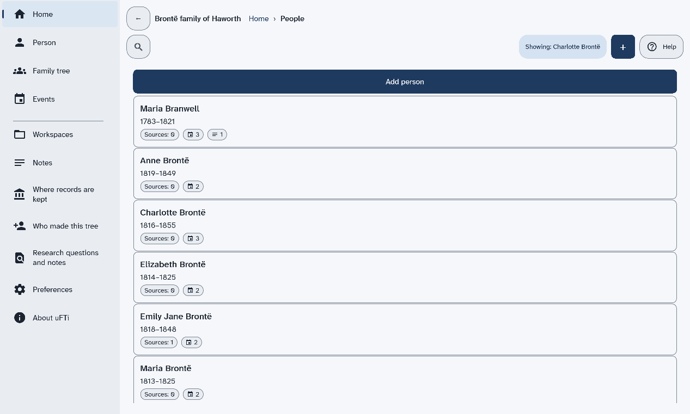
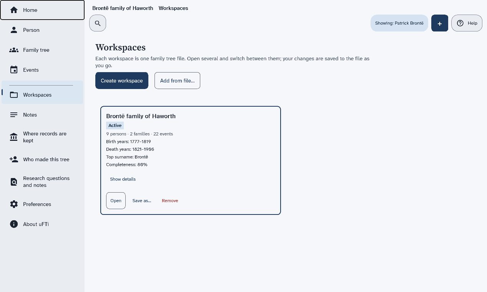
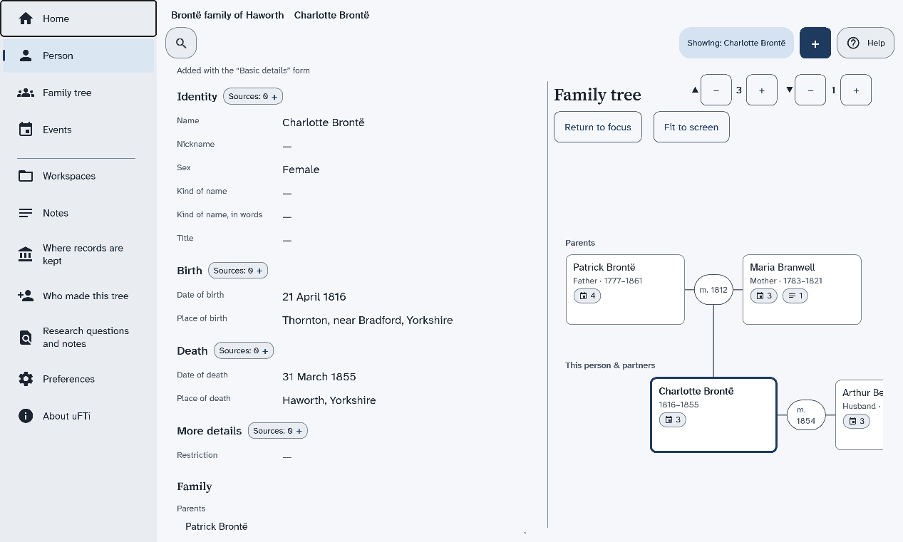

The screens of the app
What each item in the menu shows, what the top of every screen holds, and a picture of the main screens.
The tree in the pages that follow
The pages of this chapter use the sample tree, the Brontë family of Haworth. To open it, choose Workspaces in the menu, then choose Open on the card of the sample. If you removed it, make the people in the pages by hand. Add another person shows how.
The menu
The menu stays at the left of every screen. Some items show your whole tree. Others show one person. That person is named in the chip that starts with Showing.

| Menu item | What it shows | Needs a person |
|---|---|---|
| Home | The name of your tree, how much it holds, and a search box. | No |
| Person | The page of one person, with their family tree beside it. | Yes |
| Family tree | A drawing of the person with parents, partners and children. | Yes |
| Events | The things that happened in that person's life. | Yes |
| Workspaces | Your family trees, one card for each. | No |
| Notes | Your own notes about that person. | Yes |
| Where records are kept | The archives, libraries and websites your sources come from. | No |
| Who made this tree | The people credited with the tree. | No |
| Research questions and notes | Your list of questions and ideas. | No |
| Preferences | The colours and the light or dark look. | No |
| About uFTi | The version of the app and facts about your computer. | No |
The top of every screen
These stay in the same places as you move around.
- The name of your tree, then a trail of the pages you came through, such as Home and then People. Choose a name in the trail to go back to it.
- A back arrow, on a page you opened from another page. Choose it to go back one step.
- A button to search.
- The chip that starts with Showing. It names the person, or the family, that the menu pages are about.
- The + button. It opens the Add a record sheet.
- The Help button. Find help and the version says more.
Home
Home shows the name of your tree and a line that counts its people, families and events. Under it are a search box, the Search button and a button with a small icon and no words. The icon opens a panel with the heading Refine by. Find a person shows how to search.
Two more buttons sit under the search box. All people lists everyone in the tree. Open another workspace goes to your list of trees.
After you have opened a person, Home has two more headings. Under Continue with is a button with the name of the person you opened last. Under Recent people is a button for each person you opened lately.
A tree with nobody in it shows Add the first person instead.
People
This is the list that All people opens. It has one card for each person. A card shows the name, the years of life and small chips. One chip counts the sources and one counts the events. Add person starts a new person: Add another person shows how.

Workspaces
Each card is one family tree. It tells you how many people, families and events the tree holds. The tree you have open has the Active mark. Open a family tree file and Remove a tree from the list start here.

Person
This is one person's page. It has parts for Identity (the names and the sex), Birth, Death, More details, Family and Photos. Each part with facts has a chip that counts its sources.
A line above the names says how the person was added. The buttons Edit, Add a record, Copy and Delete person are at the foot of the page. The family tree of the person shows beside the page.
Find a person shows how to open a person. Change a person shows how to correct one.

Family tree and Events
See a family tree explains the tree. See the events of a person explains the list of events.
Notes
Notes are your own written words about a person, kept with their record. Add a note to a person shows how to write one.
Where records are kept, Who made this tree and Research questions and notes
These three pages list things that belong to the whole tree. You add to each with +.
- Where records are kept lists the archives, libraries, websites and family collections that hold your sources.
- Who made this tree lists the people or groups credited with the tree.
- Research questions and notes is your research log: questions, ideas and things to do. Each has a status.
Preferences
Choose how the app looks explains the choices on this page.
About uFTi
This page shows the version of the app and facts about your computer. Find help and the version shows how to read the version.